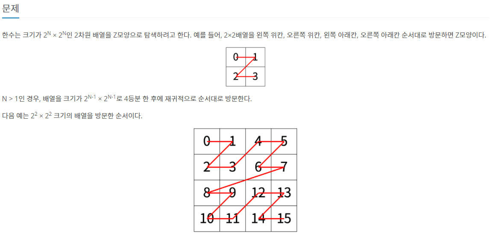
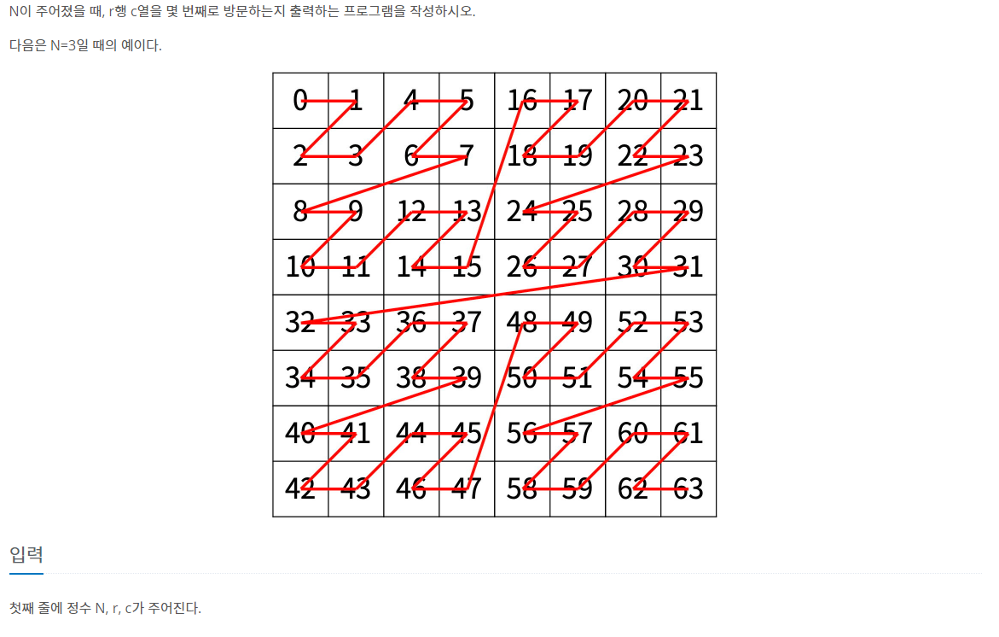
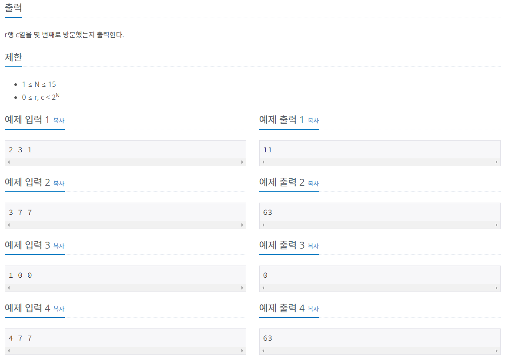
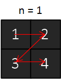
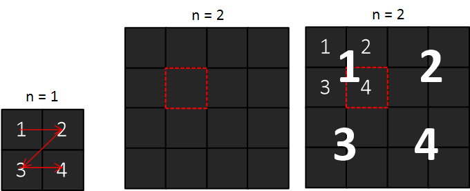
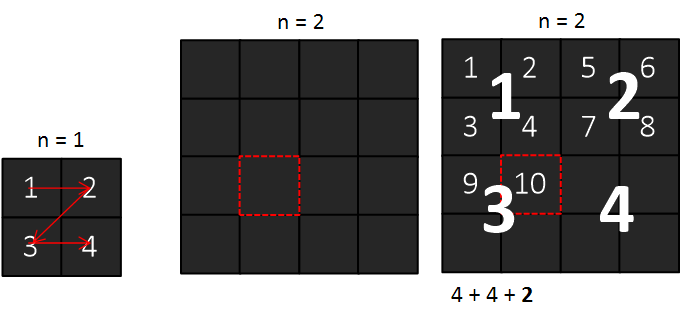

#INFO
난이도 : SILVER1
문제유형 : 재귀
1074번: Z
한수는 크기가 2N × 2N인 2차원 배열을 Z모양으로 탐색하려고 한다. 예를 들어, 2×2배열을 왼쪽 위칸, 오른쪽 위칸, 왼쪽 아래칸, 오른쪽 아래칸 순서대로 방문하면 Z모양이다. N > 1인 경우, 배열을
www.acmicpc.net
  
#SOLVE
n=1(2 x 2)인 경우 r c 가 주어졌을 때 해당하는 칸을 몇 번째로 방문할 수 있는지는 자명하다. 문제 조건에서 Z 모양으로 왼쪽 위칸 오른쪽 위칸 왼쪽 아래칸 오른쪽 아래칸 순서로 방문한다고 제시했기 때문이다.

n=2 (4 x 4)인 경우 r(2) c(2) 가 주어졌을 때 해당 칸을 몇 번째로 방문하는 지 알 수 있는 방법에 대해 생각해 보자.
좌측 상단부터 우측 하단까지 4개의 구역으로 구분한다. 다음으로 n = 1 일때의 구조를 그대로 따라가면 r = 2 , c = 2 구역의 칸은 4번째로 방문함을 알 수 있다.

이번에는 r = 3 , c = 2 에 해당하는 칸을 몇 번째로 방문하는 지 알아보자. 1구역 2구역 까지는 n = 1 일때의 규칙에 따라 모두 채워져 있을 것이다. 다음으로 r = 3, c = 2 칸은 3구역의 2번째 칸 이기에 10번째로 방문하는 칸 임을 확인할 수 있다.

위의 풀이를 토대로 유추해 보았을 때 n = 1 정보가 n = 2 에 사용되고 있음을 알 수있다.
즉, k 번째를 구하면 k + 1 번째를 구할 수 있다는 뜻이다. 또한 n = 1 의 방문하는 순서는 자명하다. 따라서 이 문제는 재귀 구조로 풀이할 수 있다.
코드는 간단하다. 크기 n , 행 r , 열 c 의 정보를 입력받아 위치 정보를 반환하는 함수 func를 선언하고, 1, 2, 3, 4 구역에 따라 그에 알맞는 방문 순서를 재귀적으로 호출시키면 된다.
// 크기 n , 행 r , 열 c 의 정보를 입력받아 위치 정보를 반환하는 함수
int func(int n, int r, int c){
if(n == 0 ) return 0; // base condition
int half = 1 << (n-1);
if(r < half && c < half) return func(n-1, r, c);
else if(r < half && c >= half) return half*half + func(n-1, r, c-half);
else if (r >= half && c < half) return 2*half*half + func(n-1, r-half, c);
return 3*half*half + func(n-1, r-half, c-half);
}#CODE
#include <bits/stdc++.h>
using namespace std;
// 크기 n , 행 r , 열 c 의 정보를 입력받아 위치 정보를 반환하는 함수
int func(int n, int r, int c){
if(n == 0 ) return 0; // base condition
int half = 1 << (n-1);
if(r < half && c < half) return func(n-1, r, c);
else if(r < half && c >= half) return half*half + func(n-1, r, c-half);
else if (r >= half && c < half) return 2*half*half + func(n-1, r-half, c);
return 3*half*half + func(n-1, r-half, c-half);
}
int main(void) {
ios::sync_with_stdio(0);
cin.tie(0);
int n, r, c;
cin >> n >> r >> c;
cout << func(n, r, c);
}